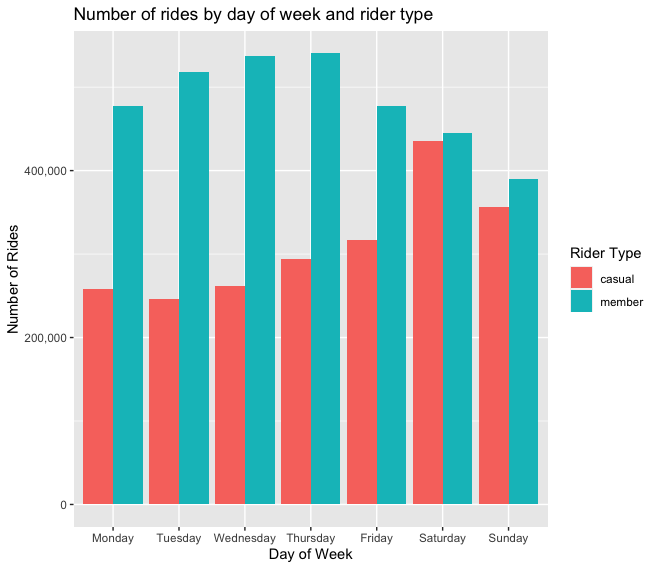

About this project
Scenario
You are a junior data analyst working in the marketing analyst team at Cyclistic, a bike-share company in Chicago.
The director of marketing, Lily Moreno believes the company’s future success depends on maximizing the number of annual memberships.
Therefore, your team wants to understand
From these insights, your team will design a new marketing strategy to convert casual riders into annual members.
But first, Cyclistic executives must approve your recommendations, so they must be backed up with compelling data insights and professional data visualizations.
Prerequisites
Cyclistic's finance analysts have concluded that riders with annual membership are much more profitable than casual riders.
Although the pricing flexibility helps Cyclistic attract more customers, the marketing director believes that maximizing the number of annual members will be key to future growth.
Goal
Design marketing strategies aimed at converting casual riders into annual riders.
In order to do that, however, the marketing analyst team needs to better understand how annual members and casual riders differ.
Moreno and her team are interested in analyzing the Cyclistic hitorical bike trip data to identify trends.
- Collect and prepare the previous 12 months of the company's trips data (December 2021 to November 2022).
- Combine, clean, and process dataset to get ready for analyzing.
- Analyze dataset, and visualize with ggplot() function.
- Share the conclusion of this analysis with the marketing director in order to answer the questions to support the company in making business decisions.
Objectives
Visualization
Click the graphs for full size image in new browser tab
My Analysis
Click RStudio icon below to view the analysis report in new browser tab
OR
click download to save it
[Download]
Analyzed using R Programming language and RStudio software.
Analysis report was written in R Markdown (RMD),
and knitted to a Hypertext Markup Language (HTML) file.
Key Findings & Conclusion
Membership riders have about 30% to 50% more rides compared tocasual riders during the week.Membership riders ' average duration stays consistent throughout the week and has slight bump on the weekend.- We can conclude that one of the main reason for riders to sign up for annual membership is commuting to work.
- The average duration of trips done by
casual riders is significantly higher than trips done bymembership riders in any day of the week. - Meaning
casual riders are likely to ride these bikes for leisure purposes. Casual riders also complete more rides on the weekend.- In short,
casual riders ride for a longer time, and more on the weekend.